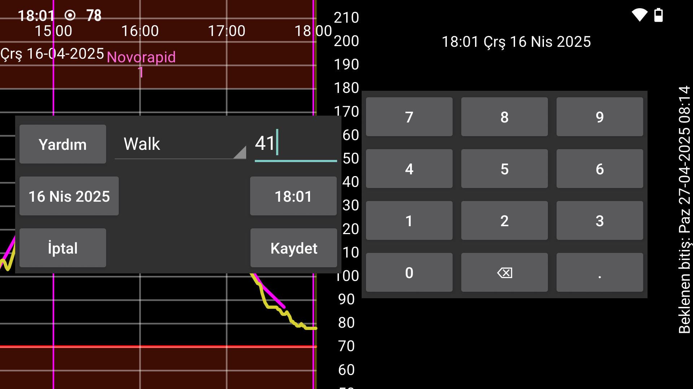

ar de es hi it ja nl pl ru tr uk uz zh en
Yeni miktar sayesinde bir etiket ile ilişkili sayıları girebilirsiniz. Etiketleri, Sol Menü→Ayarlar→Sayı Etiketleri altında ayarlayabilirsiniz. Etiketle girilen Miktarlar, grafikte belirlenen yükseklikte gösterilecektir.
Uzun basarak miktarı değiştirebilirsiniz. Ayrıca Orta Sol Menü→Liste altında girilen miktarlar listesinden de seçebilirsiniz.
NovoPen® 6 veya NovoPen Echo® Plus'tan NFC kalemini tarayarak insülin dozu verilerini almak mümkündür. Taramadan sonra Juggluco'da hangi etiket altında dozların kaydedileceğini değiştirebilir ve dozları belirli bir tarih ve saatten sonraki dozlarla sınırlayabilirsiniz. Kalemin hafızasında yüzlerce doz olduğunda, bunların hepsinin NFC aracılığıyla Juggluco tarafından alınması 30 saniyeden fazla sürebilir.
Sol menü > Ayarlar > Sayı Etiketleri altında bir öğünün karbonhidratlarını hangi etikete girdiğiniz de belirtilir. Yeni miktar'da, bu etiket için bir Yemek düğmesi görüntülenir. Bu Yemek düğmesine dokunduğunuzda, bir öğünü bileşenlerine göre belirleyebileceğiniz bir ekrana gelirsiniz. Burada karbonhidrat içeriğini belirtebilir ve ardından bir bileşenin ihtiyaç duyulan miktarını hesaplayabilirsiniz.